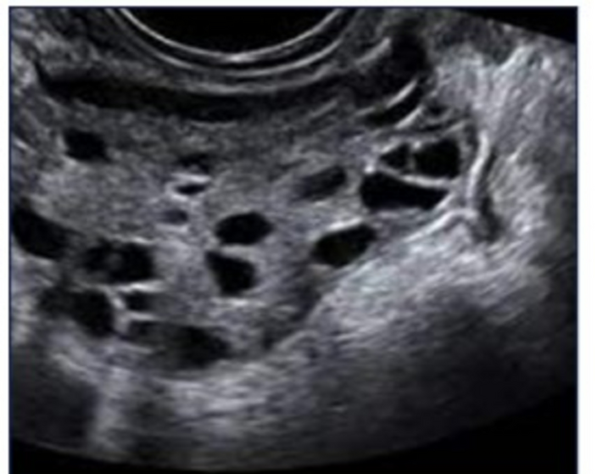

Computer Science Student specializing in AI, ML, and Deep Learning. Passionate B.Tech 3rd-year Computer Science student deeply engaged in solving real-world problems through deep learning projects. Aspiring to excel in machine learning and artificial intelligence by building efficient and impactful solutions. Motivated by the potential of AI in daily applications and continuously expanding knowledge through hands-on projects.
- Python Programming
- Deep Learning
- Machine Learning
- NLP
- MySQL, Power BI
- C++, C
- Data Structures & Algorithms
- Critical Thinking
RGUKT Nuzvid
2020 – 2026
6-Year integrated BTECH in Computer Science and Engineering | Grade: 9.0
ZPHS Pedairlapadu
2015 – 2020
General Education | GPA: 10
Studied from 5th to 10th grade
Studied from 5th to 10th grade
ECG Classification using Student-Teacher Model
Developed a deep learning pipeline to classify ECG signals. Used a ResNet-based teacher model to train a lightweight MobileNet student model, achieving high accuracy with reduced computational cost.
ECG, ResNet, MobileNet, TensorFlow
Segmentation of Neuronal Structures in EM Stacks
Implemented a U-Net++ model for precise segmentation of neuron structures in electron microscopy images. Built the pipeline in Python for accurate localization and analysis.
U-Net++, Image Segmentation, Python
PCOS Detection Using YOLOv5
Built a real-time object detection model to identify signs of PCOS from ultrasound images using YOLOv5. Dataset was annotated with Roboflow, supporting early diagnosis with high accuracy.
Python, YOLOv5, Roboflow
Zomato Restaurant Data Analysis
Analyzed customer behavior and pricing strategies using KNN and clustering. Visualized business insights with Python libraries like Seaborn and Matplotlib.
Python, Seaborn, Matplotlib
Library Management System in SQL
Designed a system to manage library operations, including book issuing and returning. Improved efficiency using MySQL and DBMS principles.
MySQL, DBMS
PCOS Detection Demo

Before Detection

After Detection
- Python & Intro to ML - Study Comrade (Jul 2022 - Aug 2022)
- ML with Python - Skill Dunia (Mar 2023 - Apr 2023)
- Supervised Machine Learning - Coursera
- Deep Learning - Padhai (One Fourth Labs)